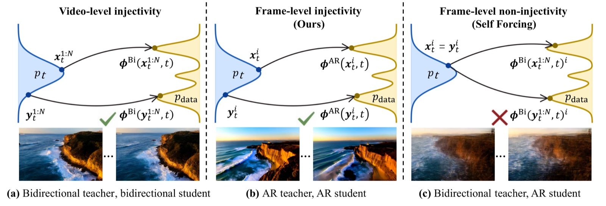
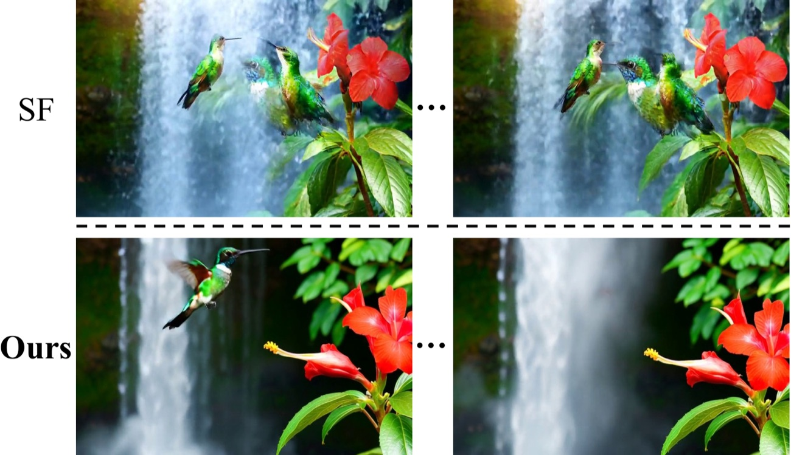

Picture learning to finish a flipbook one page at a time from a mentor who draws each page while peeking at the pages still to come. The same sketch gets different "right" finishes, so you learn their blurry average. Causal Forcing first trains a mentor who also only looks back, then copies that mentor, so every sketch has exactly one right finish.
플립북을 한 장씩 완성하는 법을, 앞으로 올 장들을 훔쳐보며 그리는 스승에게 배운다고 해 보자. 같은 밑그림에 서로 다른 "정답"이 돌아오니, 결국 그 평균인 흐린 그림을 그리게 된다. Causal Forcing은 먼저 과거만 보는 스승을 키우고, 그 스승을 따라 그리게 해서 밑그림마다 정답이 딱 하나가 되게 한다.
Why the old recipe blurs기존 방식이 흐려지는 이유
Regression needs one answer per question. If the teacher sees future frames, the same noisy frame gets different clean targets, and a student that can't see the future learns their average: blur (panel c).
회귀 학습은 질문 하나에 답 하나가 있어야 한다. 교사가 미래 프레임을 보면 같은 노이즈 프레임에 다른 정답이 붙고, 미래를 못 보는 학생은 그 평균, 즉 흐린 화면을 배운다(패널 c).

- Train an AR teacher with teacher forcing.teacher forcing으로 AR 교사를 학습한다.Condition on clean past frames, as at inference; diffusion forcing (noisy past frames) drops VisionReward from 3.343 to 1.583.각 청크(프레임 묶음)를 추론 때처럼 깨끗한 과거 프레임을 보고 복원한다. diffusion forcing(노이즈 낀 과거 프레임으로 학습)은 VisionReward를 3.343에서 1.583으로 떨어뜨린다.
- Causal ODE distillation.인과 ODE 증류.The AR teacher denoises the next chunk from real past frames; the 4-step student learns to jump straight there.실제 과거 프레임을 넣고 AR 교사가 다음 청크를 복원하게 한 뒤, 4단계 학생이 그 결과로 바로 건너뛰도록 학습한다.
- Asymmetric DMD, unchanged.비대칭 DMD는 그대로.The student rolls out on its own frames while the bidirectional Wan2.1 teacher corrects its distribution.Self Forcing과 같다. 학생이 자기가 만든 프레임을 이어 받아 생성하고, 양방향 Wan2.1 교사가 출력 분포를 바로잡는다.
Key idea: fix the start, not the finish핵심: 끝이 아니라 시작을 고친다
Same DMD, different initialization: quality nearly doubles. The gap is set before DMD begins, so fix the warm-up.
DMD는 같고 초기화만 다른데 품질이 거의 두 배다. 격차는 DMD 전에 이미 정해지므로 준비 단계를 고쳐야 한다.
Visually: the old warm-up duplicates the bird; the causal one lets it fly away.
눈으로 보면: 기존 준비 단계는 새를 겹쳐 그리고, 인과 준비 단계에서는 새가 날아간다.

Results결과
Best quality among real-time models, at the same speed. It even beats Wan2.1, the multi-step source model, which is about 22× slower.
같은 속도에서 실시간 모델 중 품질이 가장 좋다. 출발점인 여러 단계 모델 Wan2.1보다도 좋은데, Wan2.1은 약 22배 느리다.
It wins every column, including the user study. CausVid moves nearly as much but ignores prompts; Self Forcing follows prompts but moves less.
사용자 평가까지 모든 열에서 이긴다. CausVid는 움직임은 비슷하게 많지만 지시를 잘 안 따르고, Self Forcing은 지시는 따르지만 덜 움직인다.
| Model모델 | FPS ↑ | Dynamic ↑ | Vision ↑ | Instr. ↑ | Rank ↓ |
|---|---|---|---|---|---|
| Wan2.1-1.3B (bidir.)(양방향) | 0.78 | 61 | 5.275 | 42 | 2.29 |
| SkyReels-V2 (AR)(AR) | 0.49 | 37 | 3.584 | 32 | 6.57 |
| CausVid | 17.0 | 62 | 5.741 | 12 | 4.27 |
| Self Forcing | 17.0 | 57 | 5.820 | 48 | 2.87 |
| Causal Forcing | 17.0 | 68 | 6.326 | 56 | 1.64 |
When the student sees less than the teacher (here, no future frames), regression learns the teacher's average, not the teacher. Make the teacher see only what the student sees, then distill.학생이 교사보다 적게 볼 때(여기서는 미래 프레임이 없을 때) 회귀는 교사가 아니라 교사의 평균을 배운다. 교사가 학생과 같은 것만 보게 만든 다음에 증류하라.
The big ablation gains (+90% VisionReward) are against a re-run Self Forcing warm-up far weaker than the released model (dynamic 24 vs 57); against the release the gain is +8.7%. Tests cover only 5-s clips, a self-curated 100-prompt set and a 10-person user study.큰 절제 실험 이득(VisionReward +90%)은 공개된 모델보다 훨씬 약한, 다시 돌린 Self Forcing 준비 단계와 비교한 값이다(dynamic 24 대 57). 공개 모델과 비교하면 +8.7%다. 평가도 5초 영상, 저자가 고른 프롬프트 100개, 10명 사용자 평가뿐이다.